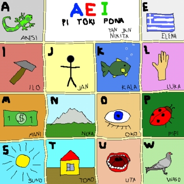

|
|
 |
レッスン2
発音とアルファベット
トキポナでは14文字しか使いません: 9個の子音(j k l m n p s t w)、そして5個の母音(a e i o u)です。
子音
j以外の全ての子音はヨーロッパ系言語を話す全ての人が期待するように発音されます。以下の図表の文字をクリックして発音される文字のWAVファイルをダウンロードすることが出来ますよ。
| letter |
pronounced as in |
|
k
|
kill |
|
l
|
let |
|
m
|
met |
|
n
|
net |
|
p
|
pit |
|
s
|
sink |
|
t
|
too |
|
w
|
wet |
|
j
|
yet |
お気付きかもしれませんが、トキポナのjは英語のjの様には発音されません。その代わりに、英語のyの様に常に発音されます。エスペラントのような言語もまたこの特性を持っています;しかし、もしjをこの様に用いる言語を学んだことがなければ、それを正しく発音するよう注意することを心掛けて下さい。もしjを見たら、それはyなんだと思いこんで下さい。
母音
トキポナの母音は英語のそれとはかなり異ります。英語の母音はかなり自由度が高く、単語に依って幾通りにも発音することが出来ますが、トキポナの母音は完全に規則的で発音は変化しません。ですので唯一難しいところと言えば、その母音を学び、それらを応用出来るようになることだけです。
もしみなさんがイタリア語、スペイン語、エスペラント語、あるいはある種の他の言語に明るいならば、おあつらえむきです。これらの言語の母音はトキポナの母音と同じなのです。この表を勉強して下さい; そしてみなさんがその音が聞けるように、文字をクリックしてサウンドのWAVをダウンロードすることが出来ますよ。
| letter |
pronounced as in |
|
a
|
father |
|
e
|
met |
|
i
|
peel |
|
o
|
more |
|
u
|
food |
練習
発音練習が出来るように、トキポナ単語のリストを作成しました。リストをダウンロードし、各単語の発音練習をし、それからみなさんの発音と比較するため音声ファイルを実行してみて下さい。音声ファイルの各単語の間で5秒停止するでしょう。幸運をお祈り致します!
単語リストをダウンロードする(397バイトテキスト)
音声ファイルをダウンロードする(708キロバイトMP3)
聞き取り練習が出来るように、12の異るトキポナ単語を発声する音声ファイルを作成しました。みなさんの作業は各単語を聞き、発音された単語を書き出すことです。それが終了したら、テキストファイルを開いて答えを確認して下さい。好運をお祈り致します!
音声ファイルをダウンロードする!(20キロバイトMP3)
答えをダウンロードする!(244バイトテキスト)
今やみなさんはアルファベットを学習されましたので、Lamentさん(トキポナの話者)作のこの小奇麗な絵を確認して下さい。それは14の異るトキポナ単語を示しており、各単語はトキポナのアルファベットの各文字から始まっています; 各単語が表現しているものの絵もいっしょに示しています。

(Elenaは、トキポナ語でギリシャを意味しますが、辞書に載っている実際のトキポナ単語ではありません。eで始まるトキポナ辞書に載っている名詞が存在しないためにElenaが使用されました。)
より進んだ内容
もしみなさんが練習問題で良い成績を挙げられたなら、今知っておく必要のある必須の内容は修得されたことになります。しかしながら、まだ修得すべき内容があります。もしみなさんが発音練習が既に非常に難しいと感じられたなら、今はこのページの以下の内容は勉強されないほうが良いと思います;しかしながら、この情報はトキポナを本当に学びたいという全ての方にとっては重要であるため、後にここに戻って来る必要があるでしょう。
もし発音練習がそれ程難しくなく、そしてもっと学びたいと思われるなら、読み続けて下さい。
1. 全ての公式のトキポナ単語(トキポナ-英語辞書で見つかるtokiやpakalaといった全ての単語)は決して大文字にはなりません。(そうです、文頭でも小文字なのです!)
2. 唯一大文字が使用されるのは、人の名前や場所や宗教といった非公式語を用いる時だけです。2、3の例を:jan Kalisija li pona. (Kalisijaは人の名前ですが、この文の唯一の大文字を含む単語です。) -- ma Elopa li suli. (Europeは公式のトキポナ単語ではありませんので大文字になっています。)
3. トキポナには非常に少数の子音しかありませんので、発音される正確な音は非常に自由で柔軟です。このレッスンで以前に修得された発音に加えて、ある子音が発音されうる2、3の他の発音の簡単なリストをここに載せておきます。
p -- bitのbの様に
t -- doのdの様に
k -- gillのgの様に
s -- zincのzの様に
4. トキポナの音節はこのパターンに従います: 子音 + 母音 + 補足的なn。もし扱っている音節がある単語内の最初の音節であるなら子音は削除出来ます(例えば、aliやunpaには最初の子音がありません)。--- もしその単語の次の音節がmかnで始まっているなら最期のnは使用出来ません。--- 聞き取りや発音の難しさのために、許されていない4つの組み合わせがあります。これらは: ji、ti、wo、そしてwuです。
5. アクセントは常に最初の音節に置かれます。
|
|
 |
|